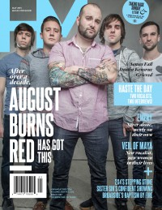

CMnexus
: Contemporary Christian culture, music, and media.
|
|
HM, May 2015, #190
| Cover |
|---|
|  | | Writers in this Issue |
|---|
Chambers, Savannah
Francis, Matt
Gonzales, Jordan
Rickaby, Ben
Santos, Sarah Dos
Simula, Collin
Smith, Cam
Smith, Gaelen
Stagg, David
Van Pelt, Doug
Winter, Ronnie
|
Cover Feature:
- "Lost and Now Found" by Jordan Gonzales
Article:
- Broadside by Ben Rickaby
- "In Brief" by Sarah Dos Santos
- "Growing Up 2x4" by Cam Smith
- "Mothers' Boys" by David Stagg
- "Loving People Well" by Ronnie Winter, Collin Simula
- "Clarified by Fire" by Collin Simula
- "The Confident Sibling" by David Stagg
- "The Boys are Back in Town" by Doug Van Pelt
Photo Feature:
- "Taking Back Sunday & LetLive" by Gaelen Smith
- Senses Fail by Savannah Chambers
From the HM Vault:Columns:
- "From Nest to Death" by Matt Francis
- "Livin' on a Prayer" by Cam Smith
- "She did everything in her power to kill me" by Ronnie Winter
|
|